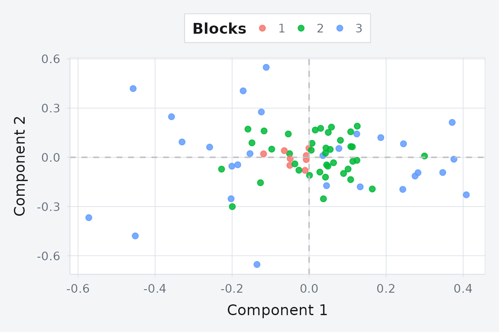

Aligned Multiblock Canonical Correlation Analysis
Source:vignettes/aligned_mcca.Rmd
aligned_mcca.RmdWhy aligned MCCA?
aligned_mcca() solves the same row-mismatch problem as
aligned_mfa(), but in the language of canonical
correlation. You use it when each block has its own row set, yet all
blocks should still line up on one shared score space over a common
latent population.
It is the correlation-based counterpart to
aligned_mfa(): same alignment idea, different
objective.
What does a quick fit look like?
c(
n_transcriptomics_rows = nrow(blocks$transcriptomics),
n_imaging_rows = nrow(blocks$imaging),
n_physiology_rows = nrow(blocks$physiology)
)
#> n_transcriptomics_rows n_imaging_rows n_physiology_rows
#> 60 55 55
fit <- aligned_mcca(blocks, row_index, N = N, ncomp = 2, ridge = 1e-6)
S <- multivarious::scores(fit)
stopifnot(all(dim(S) == c(N, 2)))
stopifnot(all(is.finite(S)))
cc <- cancor(
scale(Z, center = TRUE, scale = FALSE),
scale(S, center = TRUE, scale = FALSE)
)$cor[1:2]
stopifnot(all(is.finite(cc)))
stopifnot(mean(cc) > 0.83)
round(cc, 3)
#> [1] 0.890 0.814
Aligned MCCA scores over the latent reference rows. Darker coverage means more blocks contribute to that row.
The shared components recover the latent signal even though no block covers the same row pattern as any other block.
How is this different from ordinary MCCA?
When all blocks share the same rows, aligned_mcca()
should collapse back to mcca().
fit_aligned_full <- aligned_mcca(
full_blocks,
list(transcriptomics = seq_len(N), imaging = seq_len(N)),
N = N,
ncomp = 2,
ridge = 1e-6
)
fit_mcca <- mcca(full_blocks, ncomp = 2, ridge = 1e-6)
P1 <- multivarious::scores(fit_aligned_full) %*%
solve(crossprod(multivarious::scores(fit_aligned_full)), t(multivarious::scores(fit_aligned_full)))
P2 <- multivarious::scores(fit_mcca) %*%
solve(crossprod(multivarious::scores(fit_mcca)), t(multivarious::scores(fit_mcca)))
rel <- norm(P1 - P2, type = "F") / (norm(P2, type = "F") + 1e-12)
stopifnot(is.finite(rel))
stopifnot(rel < 1e-8)
rel
#> [1] 0That reduction matters because it tells you the alignment layer is only solving the missing-row problem. It is not changing the core GCCA objective when the problem is already fully aligned.
What should you inspect after fitting?
sapply(fit$partial_scores, dim)
#> transcriptomics imaging physiology
#> [1,] 60 55 55
#> [2,] 2 2 2
sapply(fit$canonical_weights, dim)
#> transcriptomics imaging physiology
#> [1,] 20 22 18
#> [2,] 2 2 2The partial_scores live at the observed-row level for
each block. The canonical_weights live in each block’s
feature space. Together they tell you how the shared reference-space
scores are supported by the observed data.
When should you use aligned MCCA?
Use aligned_mcca() when:
- each block has its own row set,
- you want correlation-based shared components,
- repeated or subset row mappings are part of the data collection process, and
- no block should be treated as the anchor.
If you do have a fully observed anchor block,
anchored_mcca() is the more direct interface.
Where next?
-
?aligned_mccafor weighting and ridge options -
?anchored_mccafor the anchored wrapper -
vignette("aligned_mfa")for the variance-based aligned alternative